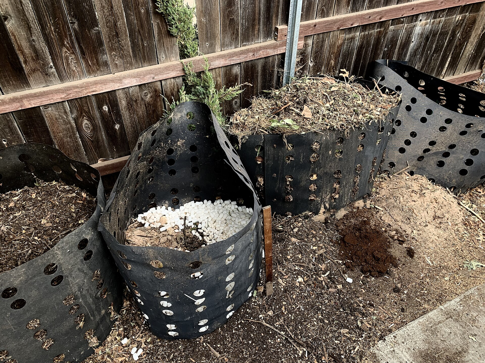
My Composting Gear
The tools I use for a sustainable life. As an Amazon Associate, I earn from qualifying purchases.
Buying an electric composter? These are the biggest-ticket recommendations on this page. Read the full Electric Composters guide first — FoodCycler vs GEME models compared, operating costs, and exactly what each one can (and can't) process.
Worm Bin Items6 items
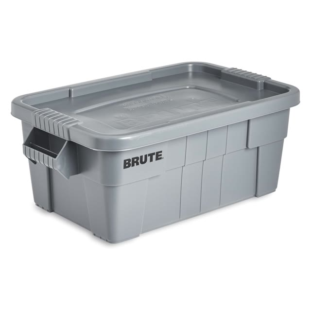
10 Gallon Tote (Affiliate Link)
The workhorse of my worm setup. A simple, stackable tote with a lid keeps worms contained and makes moving or splitting bins easy.
10 gallon capacity, stackableView on Amazon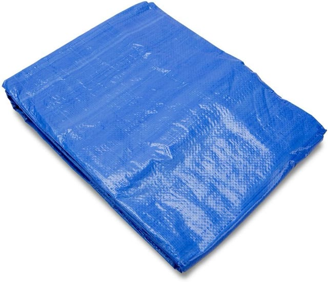
Blue Tarp (Affiliate Link)
Heavy-duty ground cover for outdoor piles. Keeps rain out of the active zone while still letting air move through the sides.
Heavy-duty polyethyleneView on Amazon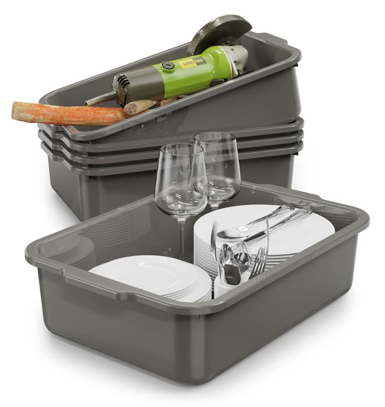
Bus Boy Tubs (Affiliate Link)
Food-service tubs are my go-to worm bin containers: cheap, durable, and easy to drill ventilation holes into. I keep a stack of them for splitting bins.
Stackable food-service gradeView on Amazon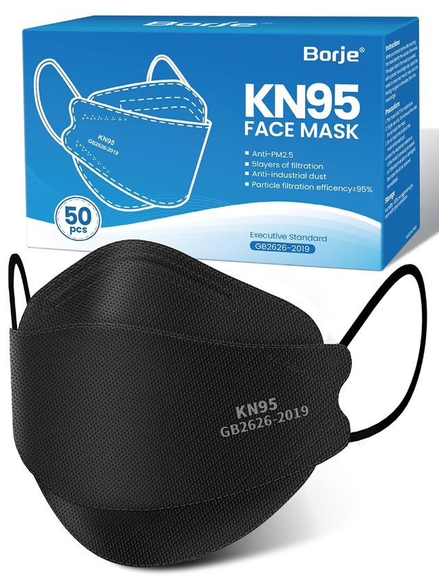
KN95 Masks (Affiliate Link)
Dry bedding and turning hot piles kick up dust. A KN95 keeps it out of my lungs when I'm working with carbon materials.
95% particulate filtrationView on Amazon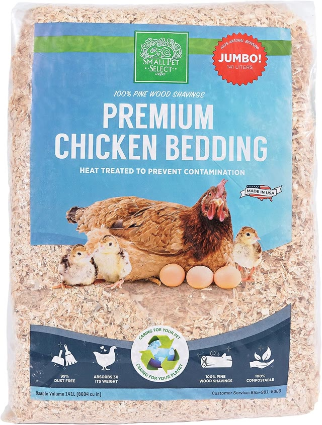
Pine Shavings (Affiliate Link)
My primary carbon-rich bedding for worm bins. Unscented shavings absorb moisture well and give the worms a loose, aerated bed to live in.
Unscented, high-carbon beddingView on Amazon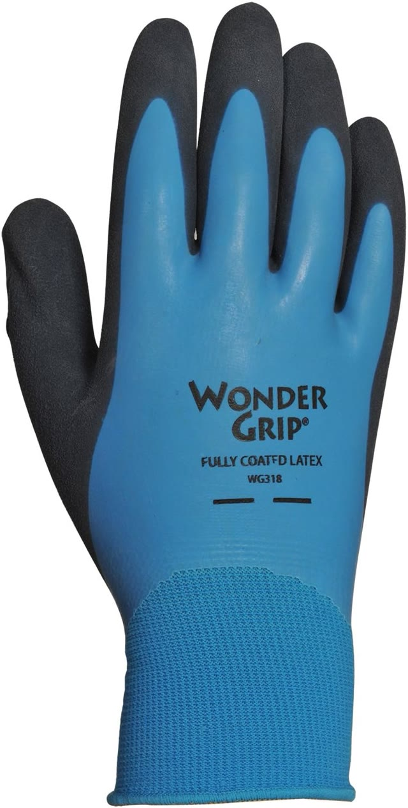
Waterproof gloves (Affiliate Link)
Worm bins are wet work. These keep my hands dry and clean when I'm digging through castings or mixing bedding.
Waterproof, flexible fitView on AmazonWorm Bag2 items
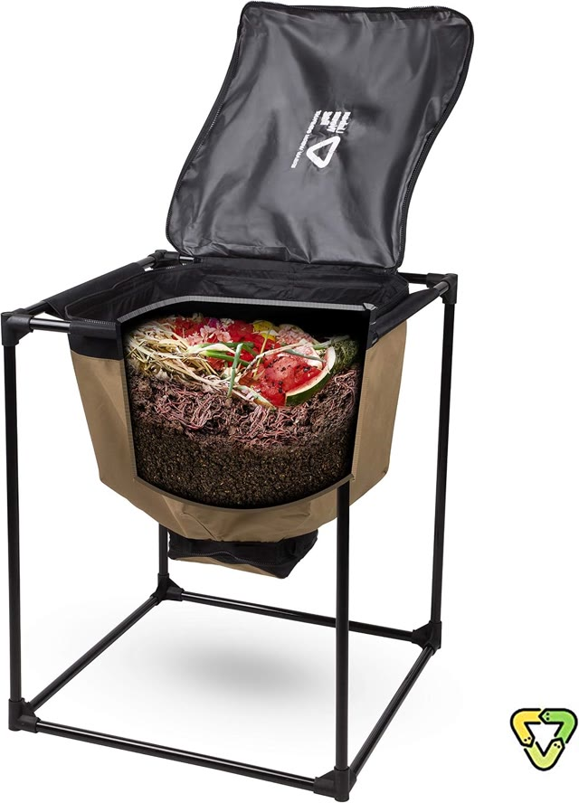
Urban Worm Bag (Affiliate Link)
A self-contained worm bin for apartments and small spaces. No drilling, no mess: feed it from the top and harvest castings when ready.
Compact, drill-free designView on Amazon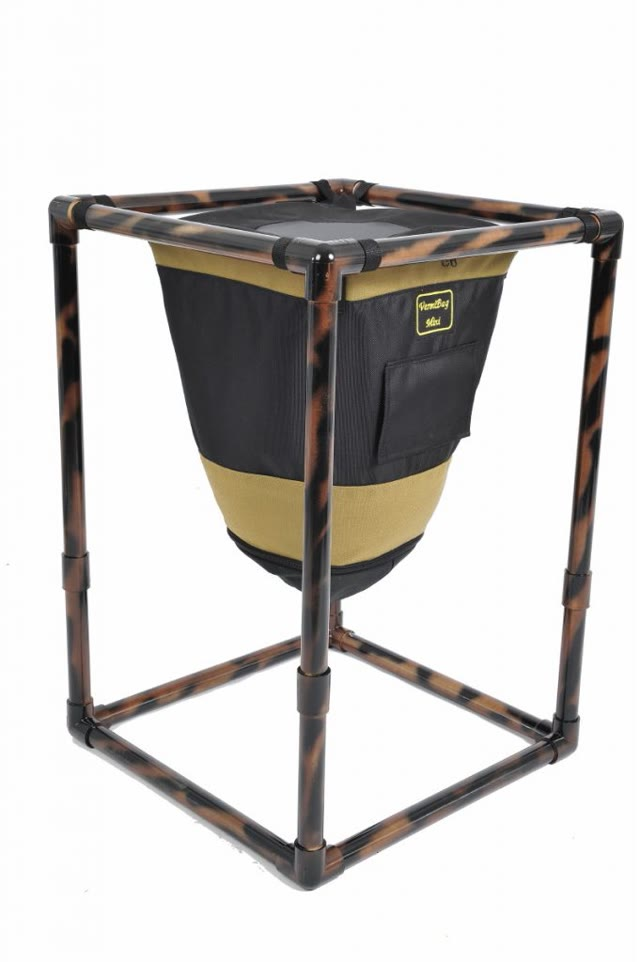
Vermibag
Another bag-style worm bin I've used for smaller setups. Great option if you want vermicomposting without a dedicated tub or stand.
Bag-style, space-savingView ProductFly Control5 items
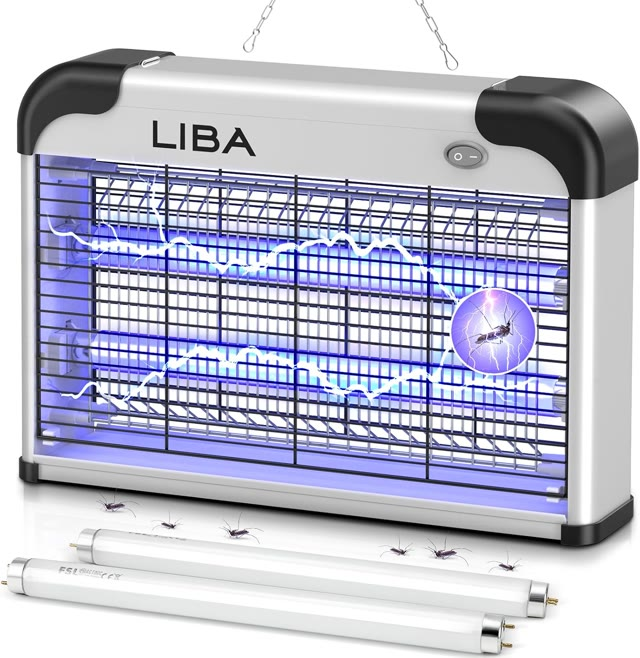
Bug Zapper (Affiliate Link)
A 2800V electric zapper for the kitchen. Fruit flies and gnats are attracted to the light and knocked out before they reach the food.
2800V grid, indoor useView on Amazon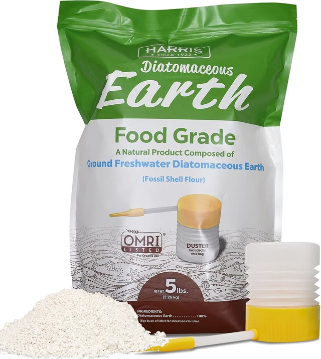
Diatomaceous Earth Food Grade (Affiliate Link)
A fine powder that dehydrates crawling insects. I dust it around bin lids and entry points as a physical fly barrier. Food grade is the only kind to use around food.
Food grade, non-chemicalView on Amazon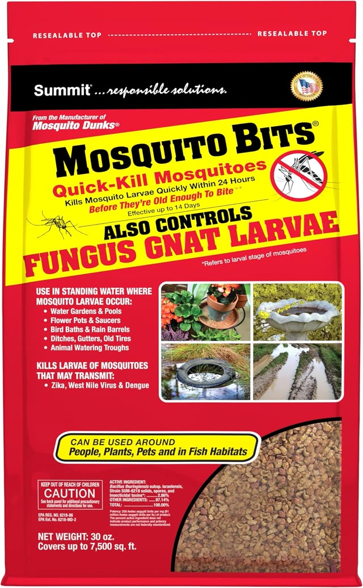
Mosquito Bits Bti (Affiliate Link)
Granules of Bt (Bacillus thuringiensis israelensis) for standing water. Drops into any puddle or container to stop mosquito larvae without harming beneficial insects.
Organic Bt bacteria, granule formView on Amazon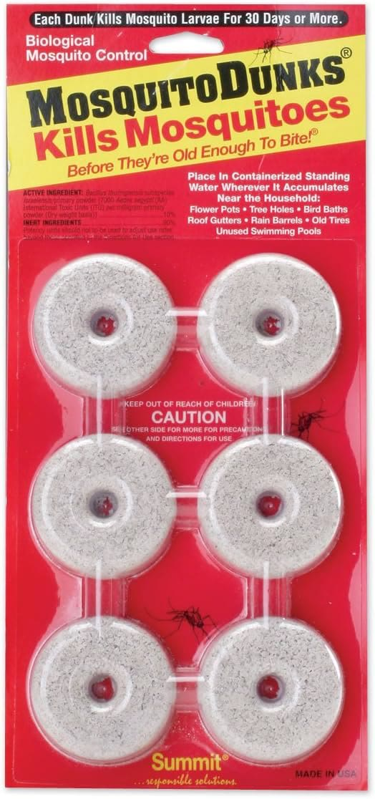
Mosquito Dunks (Affiliate Link)
The disc version of the same Bt treatment. One dunk in a bucket or rain barrel keeps mosquito larvae from hatching all season.
Organic Bt bacteria, disc formView on Amazon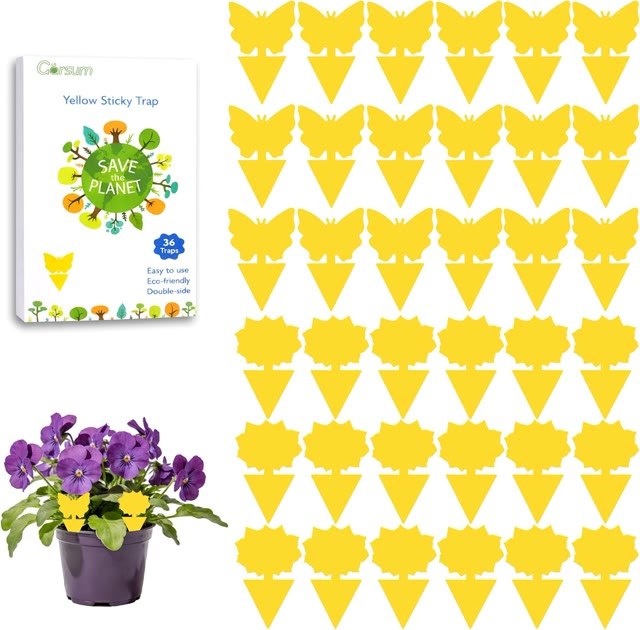
Sticky Fly Trap (Affiliate Link)
A simple glue-board trap for the kitchen. I hang one near the bin whenever fruit flies show up and it takes them out fast.
Glue board, no chemicalsView on AmazonBokashi Items2 items
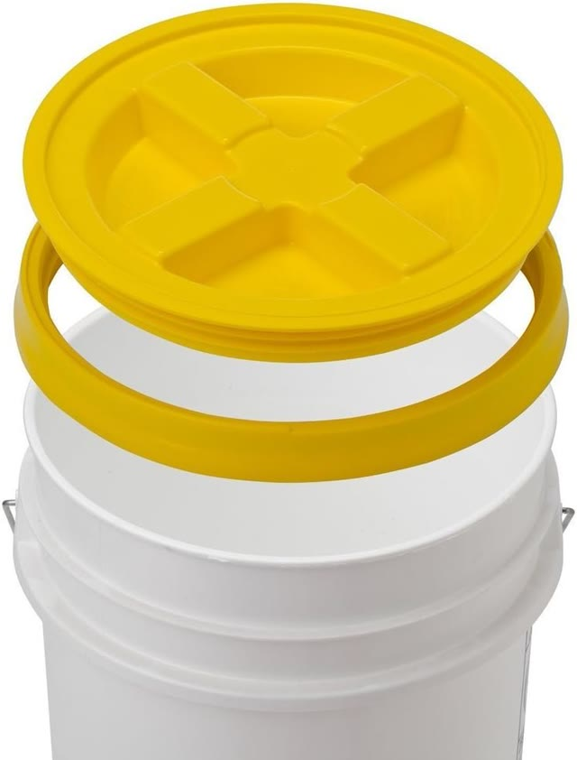
5 Gallon Bucket and Gamma Seal Lid (Affiliate Link)
My bokashi vessel. The gamma seal lid is the key: it makes the bucket truly airtight so fermentation stays anaerobic and odor-free.
5 gallon, airtight gamma sealView on Amazon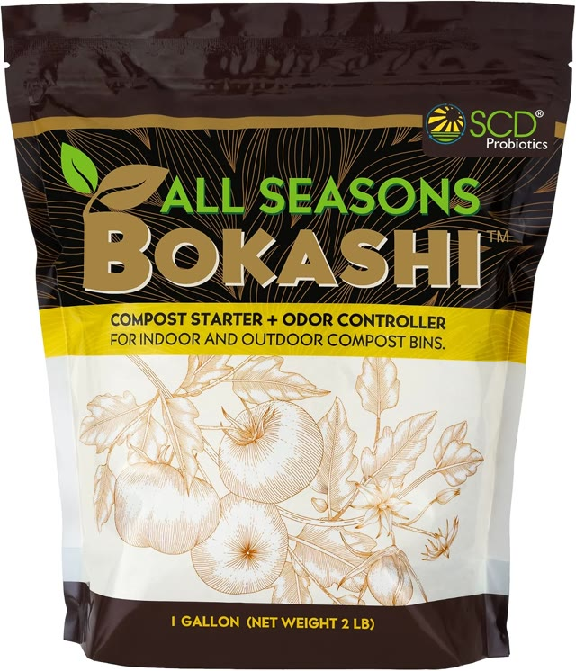
Bokashi Bran (Affiliate Link)
Inoculated grain for bokashi. A handful on every layer feeds the beneficial microbes that break down food scraps in the bucket.
2 lb (1 gallon) bag, EM-1 inoculatedView on AmazonBSF Items5 items
10 Gallon Tote (Affiliate Link)
The workhorse of my worm setup. A simple, stackable tote with a lid keeps worms contained and makes moving or splitting bins easy.
10 gallon capacity, stackableView on AmazonBlue Tarp (Affiliate Link)
Heavy-duty ground cover for outdoor piles. Keeps rain out of the active zone while still letting air move through the sides.
Heavy-duty polyethyleneView on AmazonWaterproof gloves (Affiliate Link)
Worm bins are wet work. These keep my hands dry and clean when I'm digging through castings or mixing bedding.
Waterproof, flexible fitView on Amazon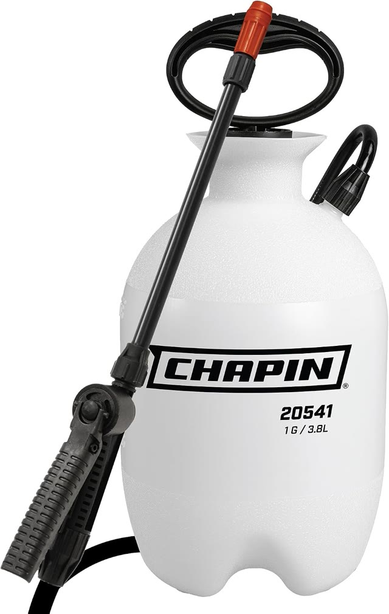
Chapin Sprayer (Affiliate Link)
My garden sprayer for watering piles and applying compost tea. A reliable hand-pump design that's easy to clean between uses.
Hand pump, garden gradeView on Amazon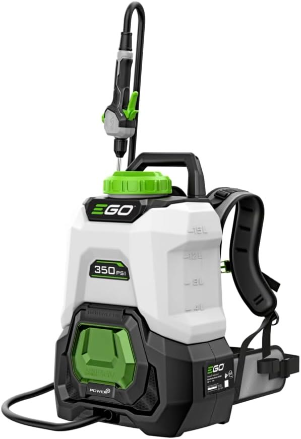
Ego 4 Gallon Sprayer (Affiliate Link)
Cordless sprayer for bigger jobs. The battery power means no pumping when I'm treating a whole bed or watering multiple piles.
4 gallon, cordlessView on AmazonElectric Composters4 items
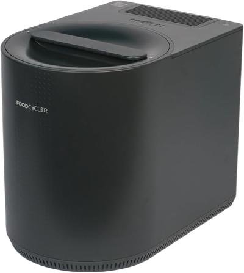
FoodCycler Eco 3 (Affiliate Link)
Entry-level electric composter with a 3-liter bucket. Ideal for singles or couples generating minimal kitchen waste.
3L capacity, ~5-6 hr cycleView on Amazon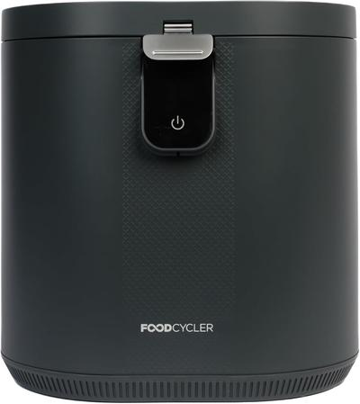
FoodCycler Eco 5 (Affiliate Link)
The most popular model with a 5-liter bucket. Designed for households of two to four people, offering fewer loading cycles per week.
5L capacity, ~5 hr cycleView on Amazon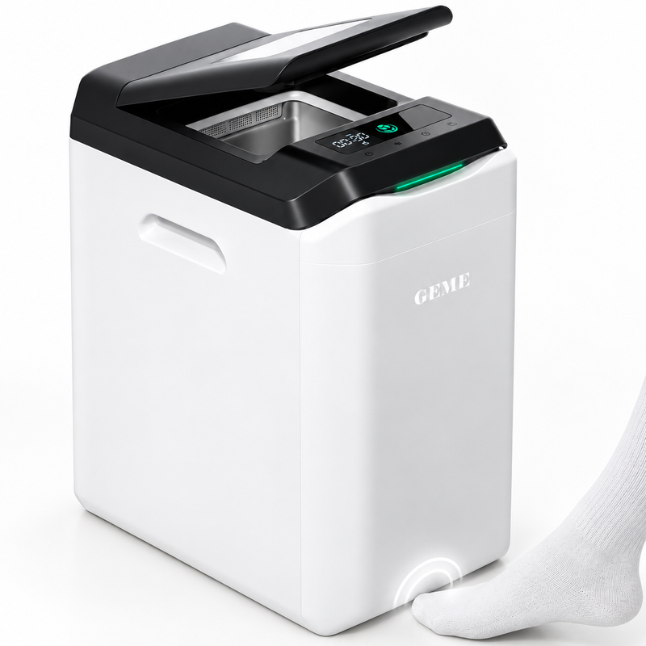
GEME Terra 2
GEME's bio-reactor (not a dehydrator) for 1-3 person households. A warm, moist, oxygen-rich chamber with living Kobold™ microbes turns food scraps — including meat, dairy and small bones — into a moist, active compost base. Continuous 'add & forget'; permanent ion filter, no refills.
14L, ~2kg/day, continuousView Product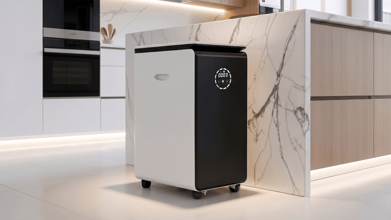
GEME Pro
GEME's heavy-duty 19L bio-reactor for 4+ households and heavy daily waste. Processes up to 5kg/day and can run 6-12 months between cleanings. Handles meat, dairy and small bones; permanent ion filter, no refills.
19L, ~5kg/day, continuousView ProductHome Efficiency8 items
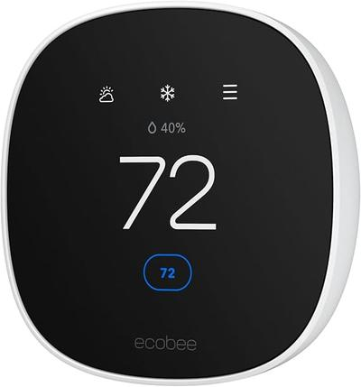
ecobee Smart Thermostat (Affiliate Link)
Smart thermostat with room sensors. I use it to monitor and optimize home energy usage — the energy reports show exactly where power is going.
Wi-Fi, room sensor includedView on Amazon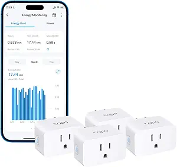
Smart Plug Wi-Fi, Energy Monitoring (Affiliate Link)
A smart plug with real-time energy monitoring. I track the wattage of individual devices to find hidden power drains.
Wi-Fi, energy monitoringView on Amazon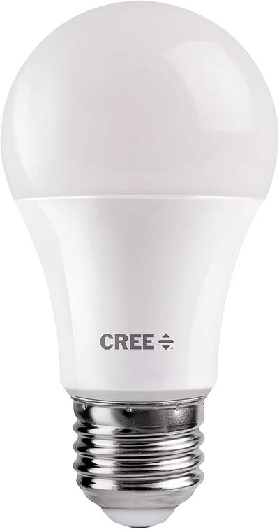
Cree LED A19 Bulb, 60W, Soft White (Affiliate Link)
LED bulbs that use a fraction of the power of incandescents. I've replaced every bulb in the house with these.
60W equivalent, soft whiteView on Amazon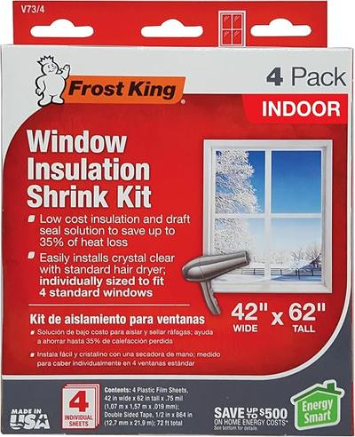
Window Insulation Shrink Kit (Affiliate Link)
A cheap way to seal drafty windows in winter. The shrink film creates an insulating air gap that cuts heat loss.
Adhesive tape + shrink filmView on Amazon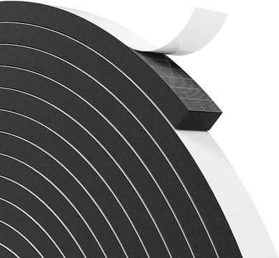
Foam Weather Stripping (Affiliate Link)
Self-adhesive foam strips for sealing gaps around doors and windows. Simple install, noticeable draft reduction.
Adhesive foam, self-sealingView on Amazon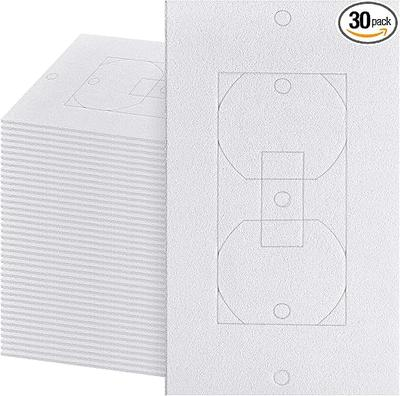
Outlet Gaskets, Foam insulation (Affiliate Link)
Foam gaskets that slip behind outlet and switch plates. Unsealed electrical boxes are a hidden source of drafts in exterior walls.
Foam, pre-cut for standard outletsView on Amazon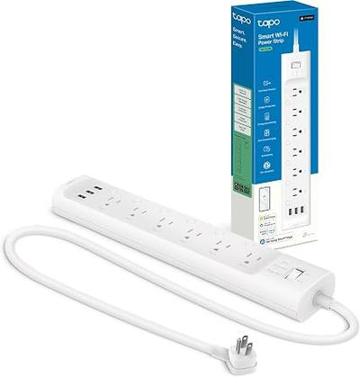
Smart Power Strip Wi-Fi, Energy Monitoring (Affiliate Link)
A smart power strip with individual outlet control and energy monitoring. I use it to kill phantom loads on entertainment centers and desk setups.
Wi-Fi, 6 outlets, energy monitorView on Amazon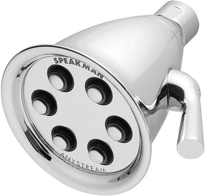
Low-Flow Showerhead (Affiliate Link)
A low-flow showerhead that saves water without sacrificing pressure. One of the easiest upgrades for reducing household utility bills.
2.0 GPM, 3-sprayView on AmazonPaper3 items
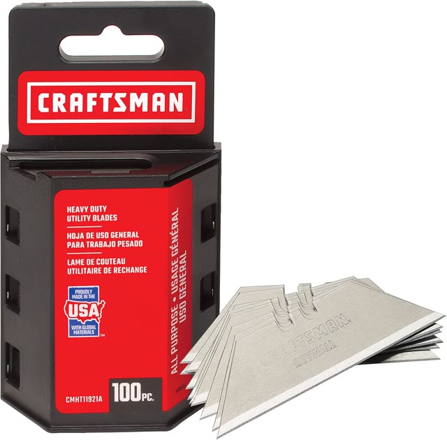
100 Pack Utility Knife Blades (Affiliate Link)
Spare blades for my paper prep. I cut cardboard and paper into small pieces before they go in the bin so they break down faster.
100 count, standard snap-offView on Amazon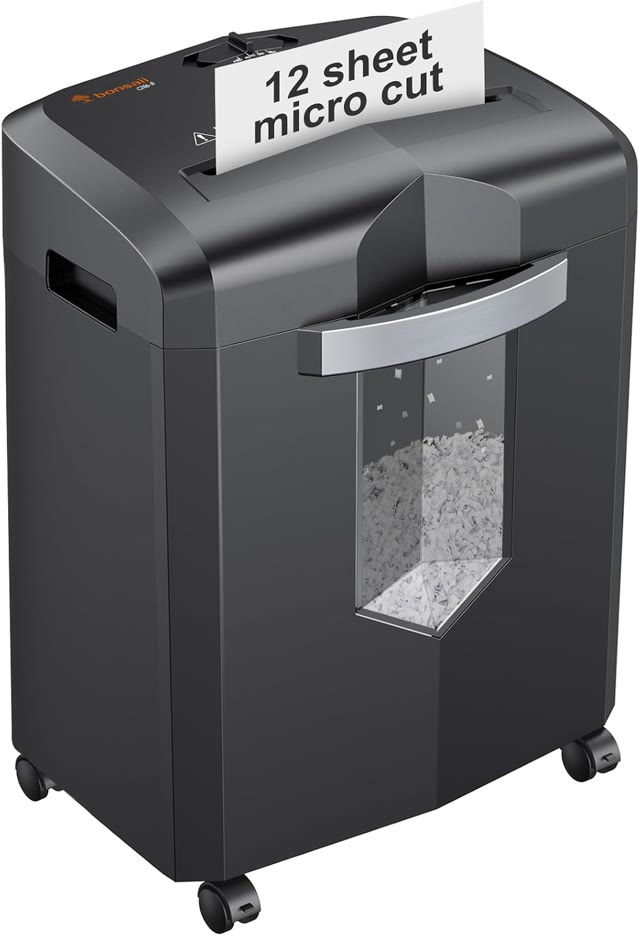
Bonsaii 12 Sheet Micr-cut Paper Shredder (Affiliate Link)
Shreds up to 12 sheets at a time into micro-cuts. The fine pieces decompose quickly in both worm bins and hot piles.
12-sheet capacity, micro-cutView on Amazon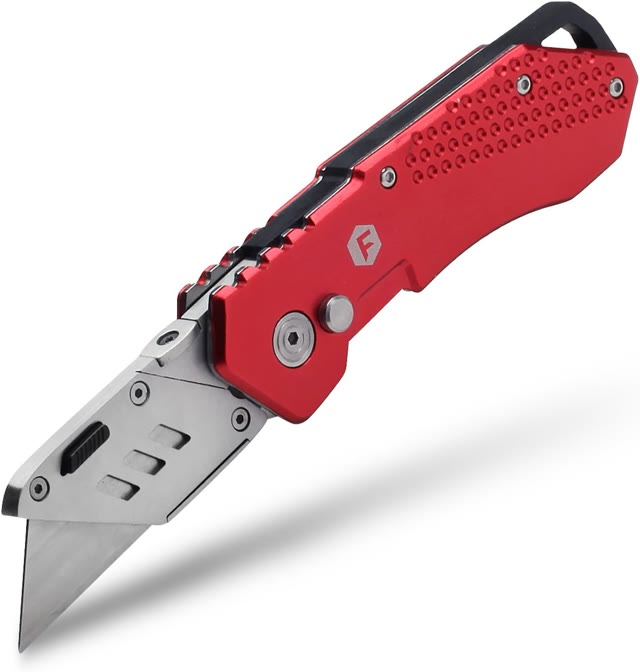
Folding Utility Knife (Affiliate Link)
My everyday cutting tool for cardboard, paper, and trimming. The folding body keeps it safe to carry around the yard.
Snap-off blade, folding handleView on AmazonPre-Compost Items2 items
Waterproof gloves (Affiliate Link)
Worm bins are wet work. These keep my hands dry and clean when I'm digging through castings or mixing bedding.
Waterproof, flexible fitView on Amazon10 Gallon Tote (Affiliate Link)
The workhorse of my worm setup. A simple, stackable tote with a lid keeps worms contained and makes moving or splitting bins easy.
10 gallon capacity, stackableView on AmazonVideo Gear8 items
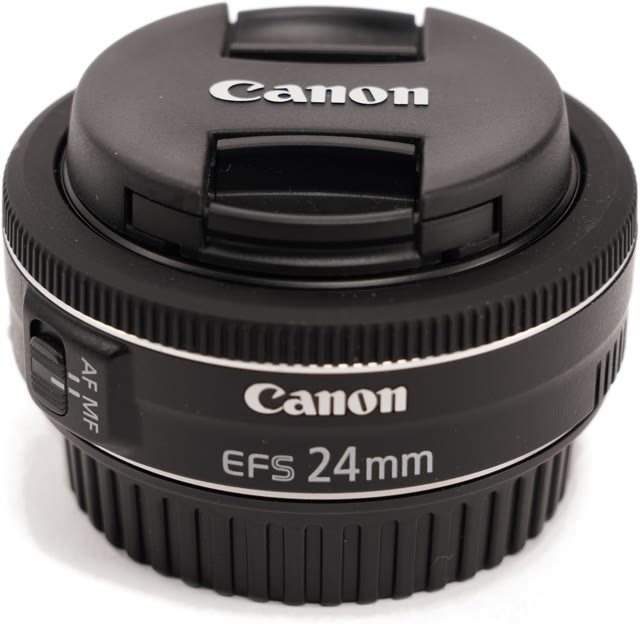
Canon EF-S 24mm f/2.8 STM Lens (Affiliate Link)
My pancake lens for B-roll and tight shots of bins and close-ups. Light enough to carry on every shoot.
24mm prime, f/2.8View on Amazon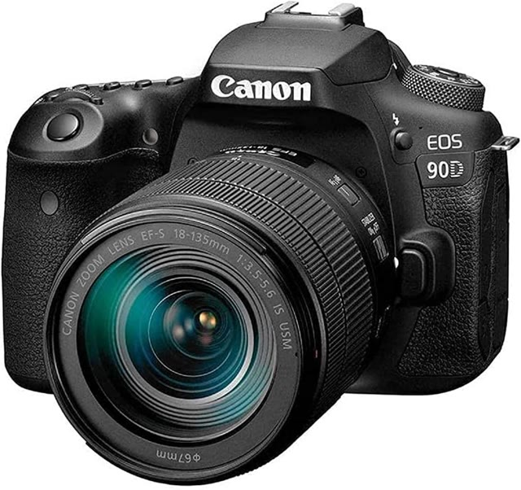
Canon EOS 90D (Affiliate Link)
My main camera for the channel. 32MP stills and solid 4K video make it a do-everything workhorse.
32MP APS-C, 4K videoView on AmazonDavinci Resolve (Affiliate Link)
My editing and color-grading suite. The free version has everything I need to cut, grade, and export the channel's videos.
Professional NLE + color suiteView on Amazon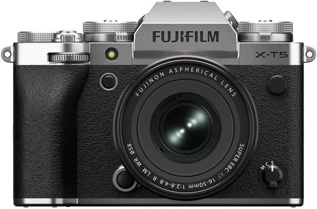
Fujifilm X-T5 (Affiliate Link)
My mirrorless backup camera. 40MP and the film simulations give footage a distinct look without heavy grading.
40MP APS-C, film simulationsView on Amazon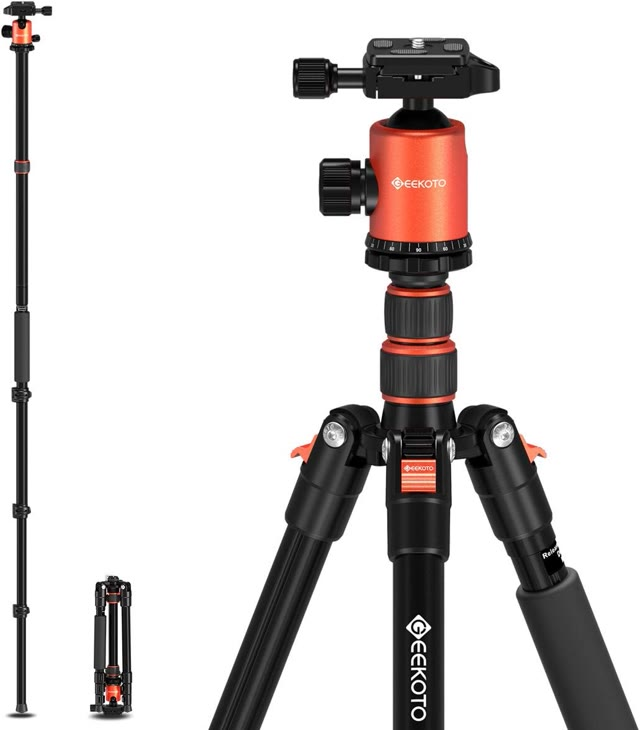
GEEKOTO Tripd (Affiliate Link)
A flexible tripod that bends into awkward positions. Perfect for low angles inside bins or mounting in tight spots where a normal tripod won't fit.
Flexible bendable legsView on Amazon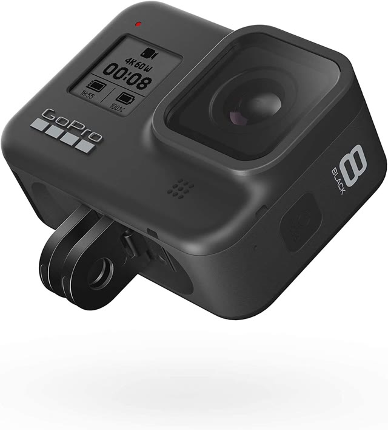
GoPro Hero 8 Black (Affiliate Link)
My action cam for in-bin footage and timelapses. The stabilization makes handheld pile-turning shots usable, and it's small enough to mount anywhere.
4K60 video, HyperSmoothView on Amazon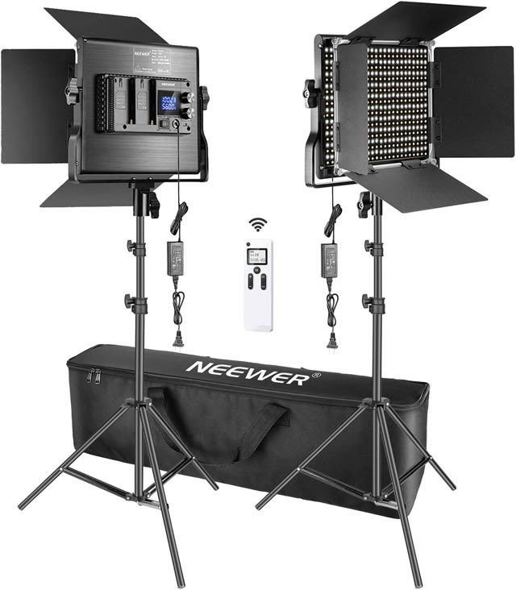
Neewer Advanced 660 LED Studio Lighting (Affiliate Link)
My studio lighting kit for talking-head segments. Softboxes keep the light even and flattering without expensive pro gear.
LED kit with softboxesView on Amazon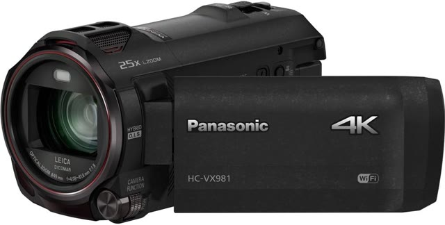
Panasonic 4k Camcorder (Affiliate Link)
A dedicated camcorder for long-form recording sessions. The built-in zoom covers wide yard shots without swapping lenses.
4K, built-in optical zoomView on AmazonWater Gear2 items
Chapin Sprayer (Affiliate Link)
My garden sprayer for watering piles and applying compost tea. A reliable hand-pump design that's easy to clean between uses.
Hand pump, garden gradeView on AmazonEgo 4 Gallon Sprayer (Affiliate Link)
Cordless sprayer for bigger jobs. The battery power means no pumping when I'm treating a whole bed or watering multiple piles.
4 gallon, cordlessView on AmazonWorms3 items
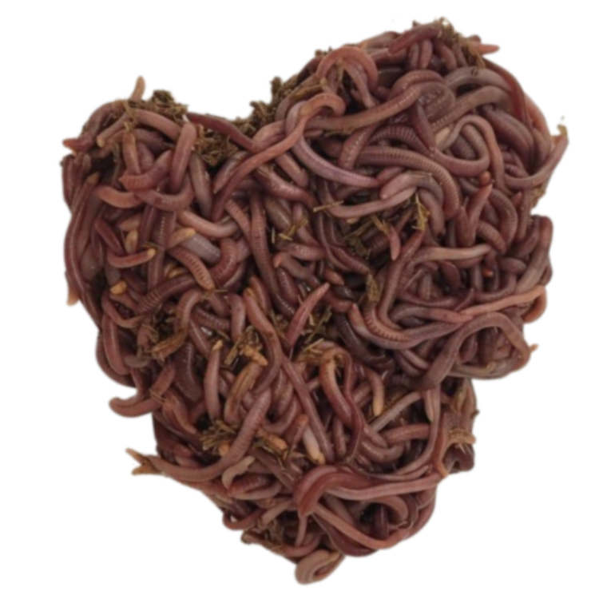
Hungry Worms - Red Wigglers
My go-to supplier for composting worms. Pure red wigglers — not a red worm mix — with free shipping and a live-delivery guarantee. Healthy, active worms that establish in new bins quickly.
$45, 0.5-10 lb, live delivery guaranteedView Product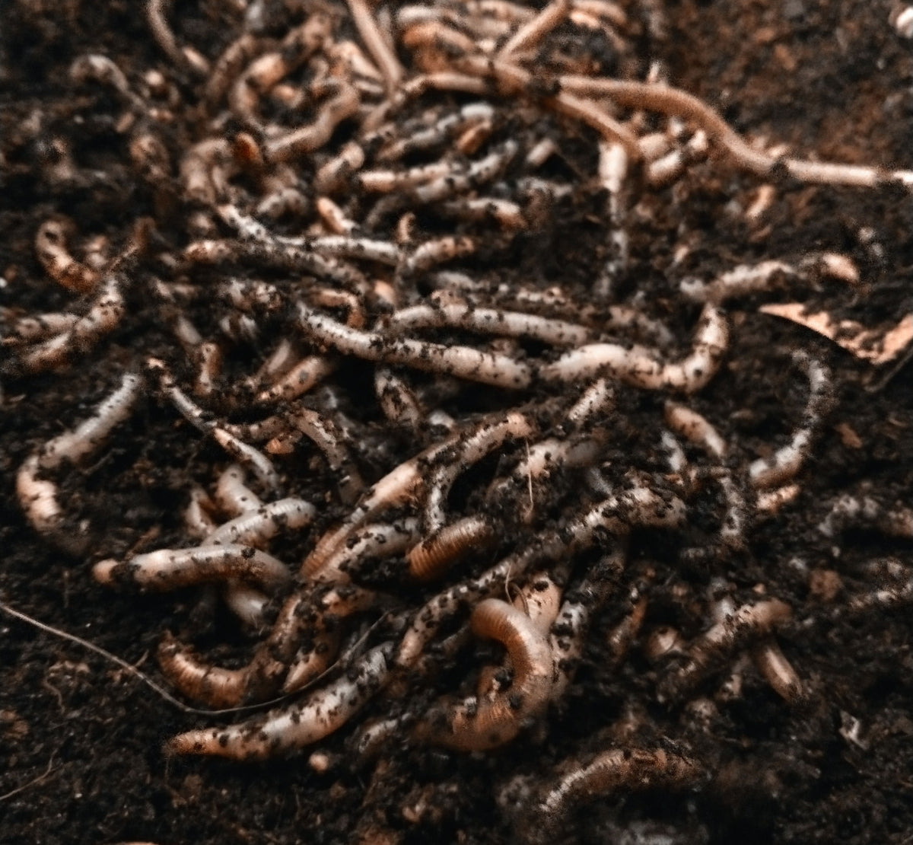
Hungry Worms - European Nightcrawlers
Versatile nightcrawlers that compost hard and double as excellent fishing bait. Low-maintenance and they tolerate a wide range of temperatures, so they suit more climates than most worms.
$40, 0.5-10 lb, composting + baitView Product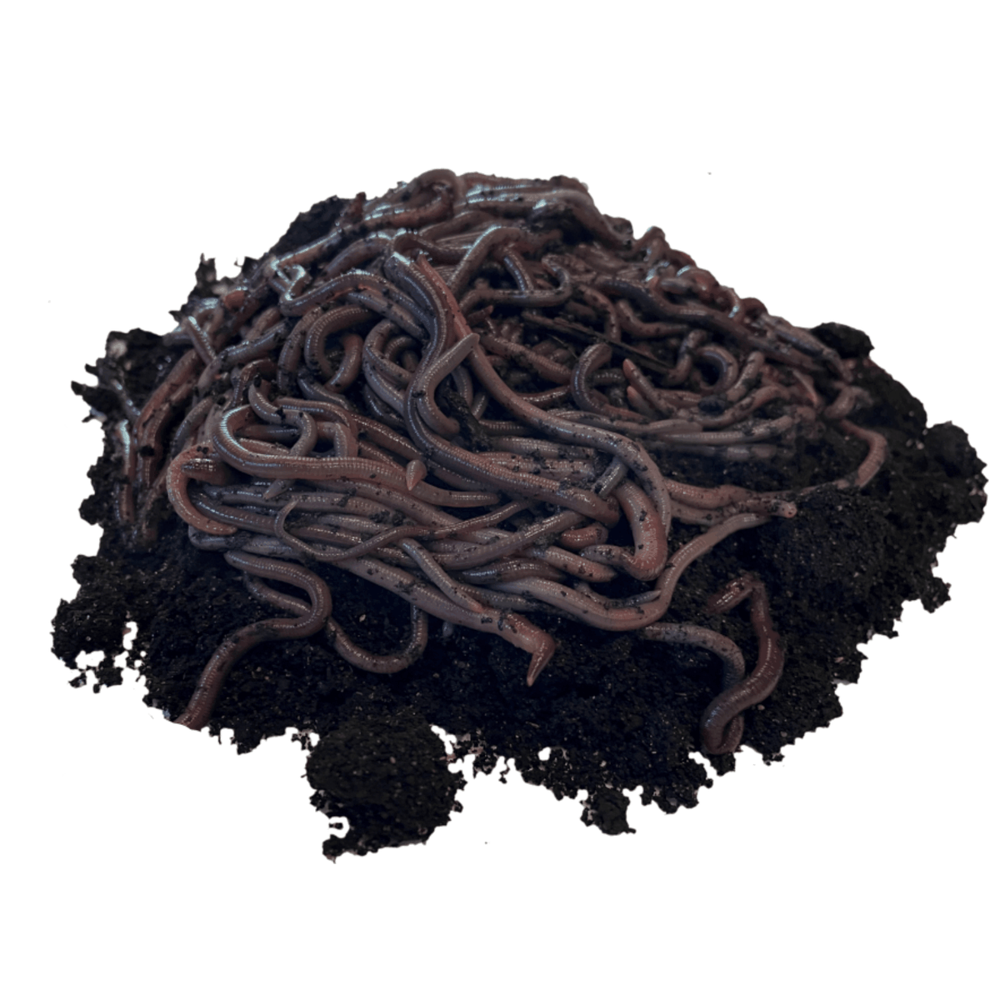
Hungry Worms - African Nightcrawlers
For experienced worm farmers. Pound for pound they eat 1.5-3x faster than red wigglers, so you get more castings in the same time. They need to stay warm — cold is their one weakness.
$60, ~300/lb, warm climates onlyView Product